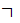
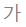
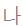
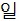
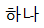
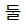

ST_NumberFormat (Numbering Format)
This simple type specifies the numbering format which shall be used for a group of automatically numbered objects,
[Example: A value of lowerLetter for page numbering indicates that a consumer shall use lowercase letters for each page in this section: a,b,c… end example]
This simple type's contents are a restriction of the XML Schema string datatype.
The following are possible enumeration values for this type:
|
Enumeration Value |
Description |
|
aiueo (AIUEO Order Hiragana) |
Specifies that the sequence shall consist of hiragana characters in the traditional a-i-u-e-o order.
[Example: ｱ, ｲ, ｳ. end example] |
|
aiueoFullWidth (Full-Width AIUEO Order Hiragana) |
Specifies that the sequence shall consist of full-width hiragana characters in the traditional a-i-u-e-o order.
[Example: ア, イ, ウ. end example] |
|
arabicAbjad (Arabic Abjad Numerals) |
Specifies that the sequence shall consist of ascending Abjad numerals.
[Example: أ, ب, ج. end example] |
|
arabicAlpha (Arabic Alphabet) |
Specifies that the sequence shall consist of characters in the Arabic alphabet.
[Example: أ, ب, ت. end example] |
|
bullet (Bullet) |
Specifies that the sequence shall consist of bullet characters.
[Example: ●. end example] |
|
cardinalText (Cardinal Text) |
Specifies that the sequence shall consist of cardinal text of the run language.
[Example: one, two, three. end example] |
|
chicago (Chicago Manual of Style) |
Specifies that the sequence shall consist of characters as defined in the Chicago Manual of Style.
[Example: *, †, ‡. end example] |
|
chineseCounting (Chinese Counting System) |
Specifies that the sequence shall consist of ascending numbers from the Chinese counting system.
[Example: 一, 二, 三, 四. end example] |
|
chineseCountingThousand (Chinese Counting Thousand System) |
Specifies that the sequence shall consist of sequential numbers from the Chinese counting thousand system.
[Example: 一, 二, …, 九, 一○ . end example] |
|
chineseLegalSimplified (Chinese Legal Simplified Format) |
Specifies that the sequence shall consist of sequential numbers from the Chinese simplified legal format.
[Example: 壹, …, 肆, 伍. end example] |
|
chosung (Korean Chosung Numbering) |
Specifies that the sequence shall consist of sequential numbers from the Korean Chosung format.
[Example: , , … end example] |
|
decimal (Decimal Numbers) |
Specifies that the sequence shall consist of decimal numbering.
[Example: 1, 2, 3, … , 9, 10, 11. end example] |
|
decimalEnclosedCircle (Decimal Numbers Enclosed in a Circle) |
Specifies that the sequence shall consist of decimal numbering enclosed in a circle, using the enclosed alphanumeric glyph character.
Once the specified sequence reaches 21, the numbers may be replaced with non-enclosed equivalents.
[Example: ①, ②, ③,… end example] |
|
decimalEnclosedCircleChinese (Decimal Numbers Enclosed in a Circle) |
Specifies that the sequence shall consist of decimal numbering enclosed in a circle, using the enclosed alphanumeric glyph character.
Once the specified sequence reaches 11, the numbers may be replaced with non-enclosed equivalents.
[Example: ①, ②, ③,… end example] |
|
decimalEnclosedFullstop (Decimal Numbers Followed by a Period) |
Specifies that the sequence shall consist of decimal numbering followed by a period, using the enclosed alphanumeric glyph character.
Once the specified sequence reaches 21, the numbers may be replaced with non-enclosed equivalents.
[Example: ⒈, ⒉, ⒊,… end example] |
|
decimalEnclosedParen (Decimal Numbers Enclosed in Parenthesis) |
Specifies that the sequence shall consist of decimal numbering enclosed in parenthesis, using the enclosed alphanumeric glyph character.
Once the specified sequence reaches 21, the numbers may be replaced with non-enclosed equivalents.
[Example: ⑴, ⑵, ⑶,… end example] |
|
decimalFullWidth (Double Byte Arabic Numerals) |
Specifies that the sequence shall consist of double-byte Arabic numbering.
[Example: １, ２, ３ . end example] |
|
decimalFullWidth2 (Double Byte Arabic Numerals Alternate) |
Specifies that the sequence shall consist of an alternative set of double-byte Arabic numbering, if one exists in the run font.
[Example: １, ２, ３ . end example] |
|
decimalHalfWidth (Single Byte Arabic Numerals) |
Specifies that the sequence shall consist of single-byte Arabic numbering.
[Example: 1, 2, 3. end example] |
|
decimalZero (Initial Zero Arabic Numerals) |
Specifies that the sequence shall consist of Arabic numbering with a zero added to numbers one through nine.
[Example: 01, 02, 03, …, 09, 10. end example] |
|
ganada (Korean Ganada Numbering) |
Specifies that the sequence shall consist of sequential numbers from the Korean Ganada format.
[Example: , , … end example] |
|
hebrew1 (Hebrew Numerals) |
Specifies that the sequence shall consist of Hebrew numerals.
[Example: א, ב, ג, … , יא, י end example] |
|
hebrew2 (Hebrew Alphabet) |
Specifies that the sequence shall consist of the Hebrew alphabet.
[Example: א, ב, ג, … end example] |
|
hex (Hexadecimal Numbering) |
Specifies that the sequence shall consist of hexadecimal numbering.
[Example: 1, 2, 3, … , 9, A, B. end example] |
|
hindiConsonants (Hindi Consonants) |
Specifies that the sequence shall consist of Hindi consonants.
[Example: अ, आ, इ, . end example] |
|
hindiCounting (Hindi Counting System) |
Specifies that the sequence shall consist of sequential numbers from the Hindi counting system.
[Example: एक, दो, तीन, … end example] |
|
hindiNumbers (Hindi Numbers) |
Specifies that the sequence shall consist of Hindi numbers.
[Example: १, २, ३, … end example] |
|
hindiVowels (Hindi Vowels) |
Specifies that the sequence shall consist of Hindi vowels.
[Example: क, ख, ग, . end example] |
|
ideographDigital (Ideographs) |
Specifies that the sequence shall consist of sequential numerical ideographs enclosed in a circle, using the appropriate character.
[Example: 一, 二, 三, 四. end example] |
|
ideographEnclosedCircle (Ideographs Enclosed in a Circle) |
Specifies that the sequence shall consist of sequential numerical ideographs enclosed in a circle, using the appropriate character.
Once the specified sequence reaches 11, the numbers may be replaced with non-enclosed equivalents.
[Example: ㊀, ㊁, ㊂,… end example] |
|
ideographLegalTraditional (Traditional Legal Ideograph Format) |
Specifies that the sequence shall consist of sequential numerical traditional legal ideographs.
[Example: 壹, 貳, 參, … end example] |
|
ideographTraditional (Traditional Ideograph Format) |
Specifies that the sequence shall consist of sequential numerical traditional ideographs.
[Example: 甲, 乙, 丙, … end example] |
|
ideographZodiac (Zodiac Ideograph Format) |
Specifies that the sequence shall consist of sequential zodiac ideographs.
[Example: 子, 丑, 寅, … end example] |
|
ideographZodiacTraditional (Traditional Zodiac Ideograph Format) |
Specifies that the sequence shall consist of sequential traditional zodiac ideographs.
[Example: 甲子, 乙丑, 丙寅, … end example] |
|
iroha (Iroha Ordered Katakana) |
Specifies that the sequence shall consist of the iroha.
[Example: ｲ, ﾛ, ﾊ, … end example] |
|
irohaFullWidth (Full-Width Iroha Ordered Katakana) |
Specifies that the sequence shall consist of the full-width forms of the iroha.
[Example: イ, ロ, ハ, … end example] |
|
japaneseCounting (Japanese Counting System) |
Specifies that the sequence shall consist of sequential numbers from the Japanese counting system.
[Example: 一, 二, …, 九, 十, 十一. end example] |
|
japaneseDigitalTenThousand (Japanese Digital Ten Thousand Counting System) |
Specifies that the sequence shall consist of sequential numbers from the Japanese digital ten thousand counting system.
[Example: 一, 二, …, 九, 一〇. end example] |
|
japaneseLegal (Japanese Legal Numbering) |
Specifies that the sequence shall consist of sequential numbers from the Japanese legal counting system.
[Example: 壱, 弐, 参, …. end example] |
|
koreanCounting (Korean Counting System) |
Specifies that the sequence shall consist of sequential numbers from the Korean counting system.
[Example: , |
|
koreanDigital (Korean Digital Counting System) |
Specifies that the sequence shall consist of sequential numbers from the Korean digital counting system.
[Example: , |
|
koreanDigital2 (Korean Digital Counting System Alternate) |
Specifies that the sequence shall consist of sequential numbers from the Korean digital counting system.
[Example: , |
|
koreanLegal (Korean Legal Numbering) |
Specifies that the sequence shall consist of sequential numbers from the Korean legal numbering system.
[Example: , , … end example] |
|
lowerLetter (Lowercase Latin Alphabet) |
Specifies that the sequence shall consist of the letters of the Latin alphabet in lower case.
[Example: a, b, c. end example] |
|
lowerRoman (Lowercase Roman Numerals) |
Specifies that the sequence shall consist of lowercase roman numerals.
[Example: i, ii, iii. end example] |
|
none (No Numbering) |
Specifies that the sequence shall not display any numbering. |
|
numberInDash (Number With Dashes) |
Specifies that the sequence shall consist of the Arabic numbering surrounded by dash characters.
[Example: - 1 -, - 2 -, - 3 -. end example] |
|
ordinal (Ordinal) |
Specifies that the sequence shall consist of ordinals of the run language.
[Example: 1st, 2nd, 3rd. end example] |
|
ordinalText (Ordinal Text) |
Specifies that the sequence shall consist of ordinal text of the run language.
[Example: first, second, third. end example] |
|
russianLower (Lowercase Russian Alphabet) |
Specifies that the sequence shall consist of the letters of the Russian alphabet in lower case.
[Example: а, б, в. end example] |
|
russianUpper (Uppercase Russian Alphabet) |
Specifies that the sequence shall consist of the letters of the Russian alphabet in upper case.
[Example: А, Б, В. end example] |
|
taiwaneseCounting (Taiwanese Counting System) |
Specifies that the sequence shall consist of sequential numbers from the Taiwanese counting system.
[Example: 一, 二, …, 九, 十. end example] |
|
taiwaneseCountingThousand (Taiwanese Counting Thousand System) |
Specifies that the sequence shall consist of sequential numbers from the Taiwanese counting thousand system.
[Example: 一, 二, …, 九, 一○ . end example] |
|
taiwaneseDigital (Taiwanese Digital Counting System) |
Specifies that the sequence shall consist of sequential numbers from the Taiwanese digital counting system.
[Example: 一, 二, …, 九, 一○ . end example] |
|
thaiCounting (Thai Counting System) |
Specifies that the sequence shall consist of sequential numbers from the Thai counting system.
[Example: หนึ่ง, สอง, สาม. end example] |
|
thaiLetters (Thai Letters) |
Specifies that the sequence shall consist of Thai letters.
[Example: ก, ข, ค. end example] |
|
thaiNumbers (Thai Numerals) |
Specifies that the sequence shall consist of Thai numerals.
[Example: ๒, ๓, ๔. end example] |
|
upperLetter (Uppercase Latin Alphabet) |
Specifies that the sequence shall consist of the letters of the Latin alphabet in upper case.
[Example: A, B, C. end example] |
|
upperRoman (Uppercase Roman Numerals) |
Specifies that the sequence shall consist of uppercase roman numerals.
[Example: I, II, III. end example] |
|
vietnameseCounting (Vietnamese Numerals) |
Specifies that the sequence shall consist of Vietnamese numerals.
[Example: một, hai, ba. end example] |
|
Referenced By |
|
caption@numFmt (§2.15.1.16); numFmt@val (§2.9.18); numFmt@val (§2.11.17); numFmt@val (§2.11.18); pgNumType@fmt (§2.6.12) |
The following XML Schema fragment defines the contents of this simple type:
<simpleType name="ST_NumberFormat">
<restriction base="xsd:string">
<enumeration value="decimal"/>
<enumeration value="upperRoman"/>
<enumeration value="lowerRoman"/>
<enumeration value="upperLetter"/>
<enumeration value="lowerLetter"/>
<enumeration value="ordinal"/>
<enumeration value="cardinalText"/>
<enumeration value="ordinalText"/>
<enumeration value="hex"/>
<enumeration value="chicago"/>
<enumeration value="ideographDigital"/>
<enumeration value="japaneseCounting"/>
<enumeration value="aiueo"/>
<enumeration value="iroha"/>
<enumeration value="decimalFullWidth"/>
<enumeration value="decimalHalfWidth"/>
<enumeration value="japaneseLegal"/>
<enumeration value="japaneseDigitalTenThousand"/>
<enumeration value="decimalEnclosedCircle"/>
<enumeration value="decimalFullWidth2"/>
<enumeration value="aiueoFullWidth"/>
<enumeration value="irohaFullWidth"/>
<enumeration value="decimalZero"/>
<enumeration value="bullet"/>
<enumeration value="ganada"/>
<enumeration value="chosung"/>
<enumeration value="decimalEnclosedFullstop"/>
<enumeration value="decimalEnclosedParen"/>
<enumeration value="decimalEnclosedCircleChinese"/>
<enumeration value="ideographEnclosedCircle"/>
<enumeration value="ideographTraditional"/>
<enumeration value="ideographZodiac"/>
<enumeration value="ideographZodiacTraditional"/>
<enumeration value="taiwaneseCounting"/>
<enumeration value="ideographLegalTraditional"/>
<enumeration value="taiwaneseCountingThousand"/>
<enumeration value="taiwaneseDigital"/>
<enumeration value="chineseCounting"/>
<enumeration value="chineseLegalSimplified"/>
<enumeration value="chineseCountingThousand"/>
<enumeration value="koreanDigital"/>
<enumeration value="koreanCounting"/>
<enumeration value="koreanLegal"/>
<enumeration value="koreanDigital2"/>
<enumeration value="vietnameseCounting"/>
<enumeration value="russianLower"/>
<enumeration value="russianUpper"/>
<enumeration value="none"/>
<enumeration value="numberInDash"/>
<enumeration value="hebrew1"/>
<enumeration value="hebrew2"/>
<enumeration value="arabicAlpha"/>
<enumeration value="arabicAbjad"/>
<enumeration value="hindiVowels"/>
<enumeration value="hindiConsonants"/>
<enumeration value="hindiNumbers"/>
<enumeration value="hindiCounting"/>
<enumeration value="thaiLetters"/>
<enumeration value="thaiNumbers"/>
<enumeration value="thaiCounting"/>
</restriction>
</simpleType>